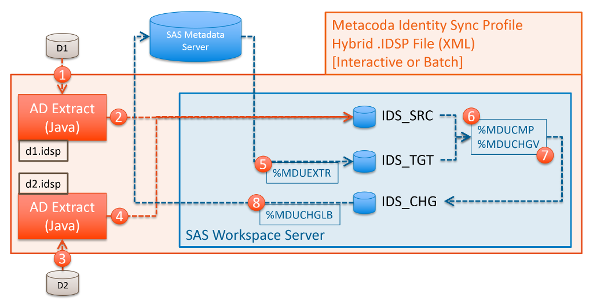

Active Directory Domains
This section describes some of the common scenarios when synchronising SAS metadata with Microsoft Active Directory (AD) domains and how Metacoda Identity Sync Profiles (IDSPs) can support these.
Single Domain / Single IDSP
The most common scenario is synchronising with a single domain. This can be supported with a single IDSP as described in the Single (Basic) Identity Sync Profile section of Identity Sync Profiles & Process and illustrated below:

Multiple Domains / Single Forest / Single IDSP
Sometimes it is necessary to synchronise with multiple AD domains. If these domains are all within the same AD forest then this can also be supported with a single IDSP. When following the well known AGDLP or AGUDLP models for organising groups that span domains, the IDSP can target groups in one of the domains and the Metacoda Identity Sync process will follow group members into other domains in the same forest as shown in the diagram below.

The IDSP targets the AU domain in the AU forest. The Finance Domain Local group is one of the included groups. When processing group members, the Finance Universal group includes a Finance Global group from the EU domain (in the same forest) so all of its members are also considered for synchronisation.
The Identity Sync Process for this scenario is very similar to the single domain scenario except that the source identity extraction process can return members from multiple domains in the same forest. The following diagram illustrates this variation.
In scenarios like this, where multiple domains are involved, you will most likely want to choose pseudo-attributes, such as sAMAccountNameWithDomain, that automatically include the name of the source domain (as dynamically determined from the directory) when choosing attributes mappings in the Identity Sync Profile Wizard.
Multiple Domains / Multiple Forests / Hybrid IDSP
When SAS metadata identities need to be sourced from multiple AD domains, across multiple AD forests, it is necessary to use a Hybrid IDSP with at least one child IDSP per forest. For more information on Hybrid IDSPs see the Multiple (Hybrid) Identity Sync Profiles section of Identity Sync Profiles & Process.
The diagram below illustrates the Identity Sync Process for this scenario, where there are two AD domains, D1 and D2, which are in different AD forests. There are two child IDSPs, one for each domain, wrapped up in a Hybrid IDSP.

Foreign Security Principals
Occasionally when dealing with multiple domains you may encounter the following error message during the Identity Sync Process:
Failed to fetch included AD groups: Can't follow Foreign-Security-Principal into trusted domain for AD identity (with DN 'CN=S-1-5-21-1234567890-123456789-123456789-1234,CN=ForeignSecurityPrincipals,DC=d1,DC=example,DC=com').
This is an error generated to highlight the fact that at least one of the targeted groups in the D1 domain contains a member from a domain in a different forest. This indicates a situation where there are multiple AD forests with trust relationships. Whilst the single IDSP scenarios support following groups into domains within the same forest, they do not support following groups into domains in other forests. To synchronise with multiple domains across one or more forests it is necessary to use Hybrid IDSPs and, if required, modify any affected child IDSPs to ensure they ignore Foreign Security Principals.
To ignore Foreign Security Principals, the IDSP will need to be modified using a text editor, and the foreignSecurityPrincipalHandling attribute added to the LDAPConfig tag with a value of ignore like so:
<LDAPConfig
...
foreignSecurityPrincipalHandling="ignore"
/>
This will ignore any group members that come from another forest (instead of generating an error). If those members are actually required in SAS metadata then you will need to ensure that they are within a targeted group in the hybrid child IDSP that corresponds to that foreign domain.